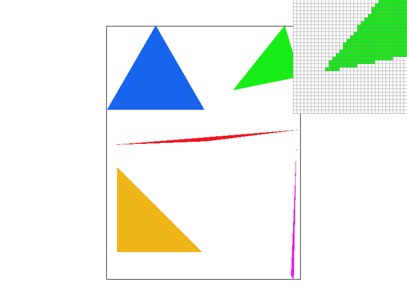
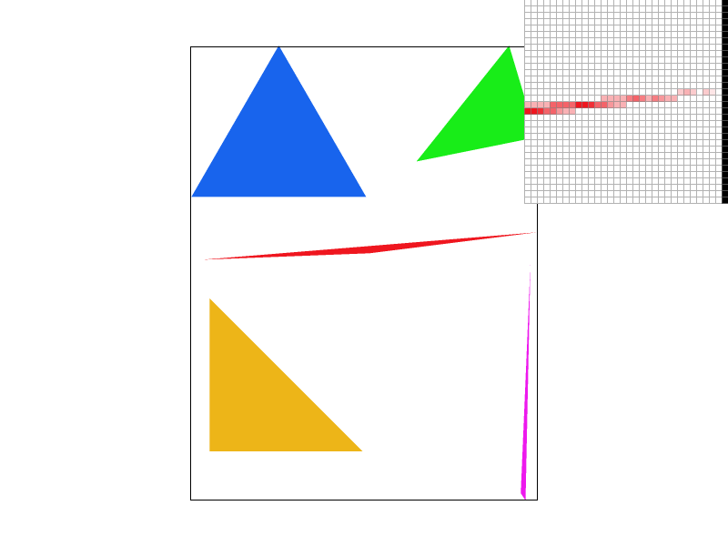
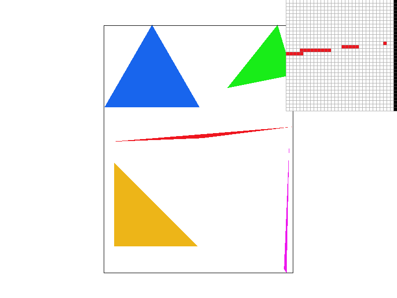
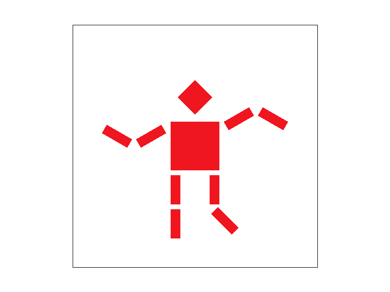
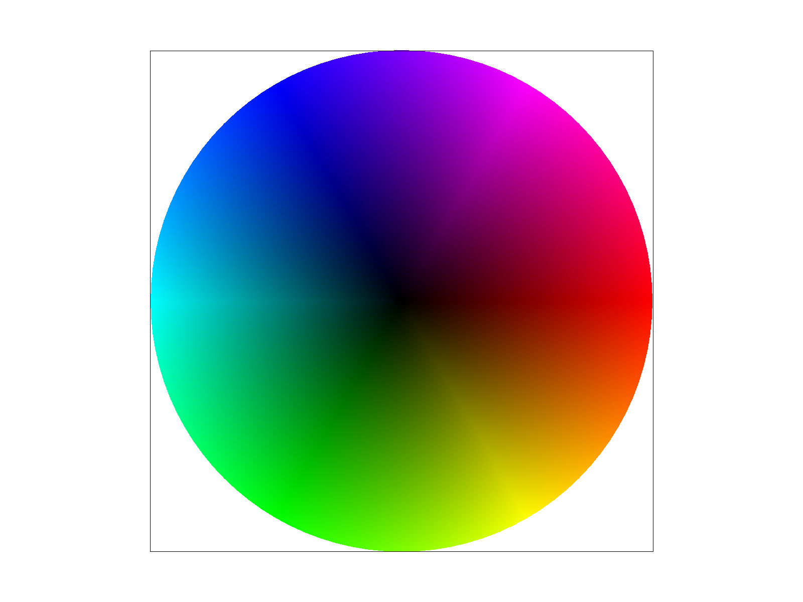
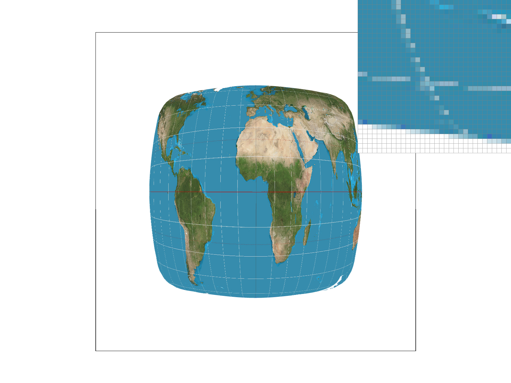
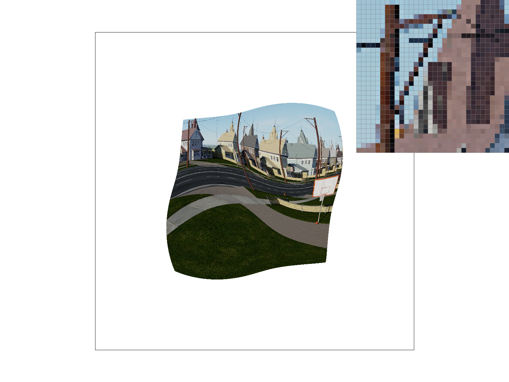
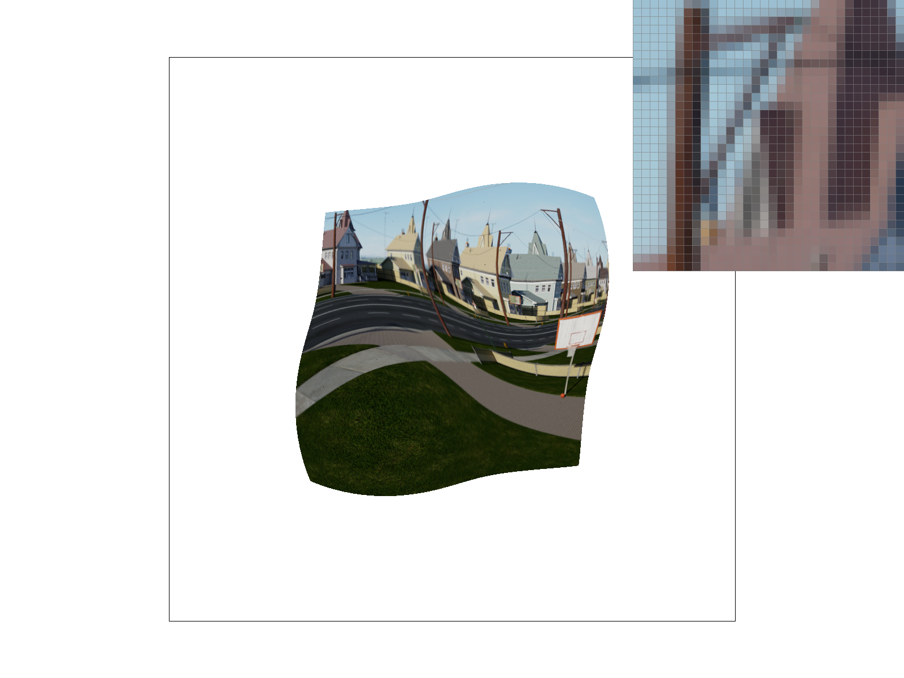
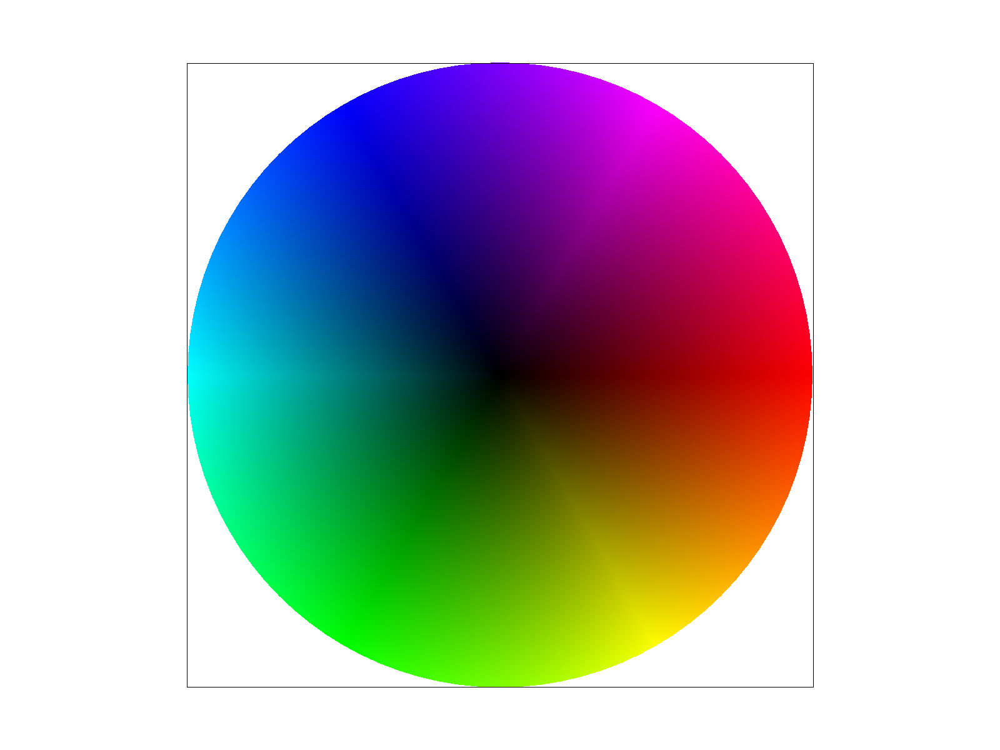
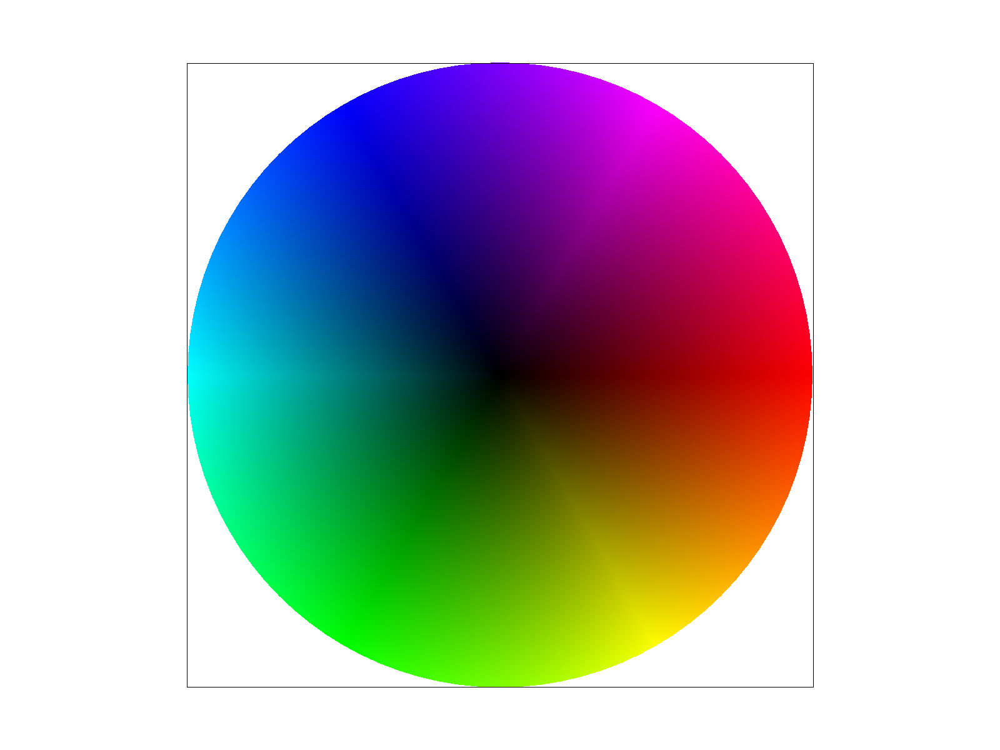

In this homework, I implemented a basic rasterizer starting with line checks to rasterize single triangles. The final product includes various pixel and level sampling options. I found the mipmap part of the homework especially interesting, as I could see the resolution difference in various regions of an image as I switched between zero and various level sampling options - seeing these resolution changes helped me build intuition.
Section I: Rasterization
Part 1: Rasterizing single-color triangles
$\texttt{rasterize_triangle()}$ is written as follows: First, we build $\texttt{Vector2D}$ objects representing normal vectors (vertex $0 \rightarrow 1, 1 \rightarrow 2, 2 \rightarrow 0$). Then, we find the triangle's bounding box and only loop through those points: inside the loop, we check $V \cdot N$ and whether the signs of each dot product are equal. If all signs $\geq$ 0 (or all signs $\leq$ 0), we $\texttt{fill_pixel()}$.
This algorithm is slightly better than fully checking each sample because of an optimization: we first check whether the point lies on the same side of two lines, and do not continue checking if it does not. The timing for this optimization is labeled as "Half-check" below. Additionally, we move some redundant FLOPs outside of the loops and get a small speed-up.
Method
Clock ticks
Bounding box
5440
Fewer loop FLOPs
5233
Half-check
4601

Figure 1: Screenshot of a rasterized image with the pixel inspector focused on a triangle corner.
Part 2: Antialiasing triangles
My supersampling algorithm resizes the sample buffer to $(width \cdot \sqrt{s}) \text{ x } (height \cdot \sqrt{s})$ where $s$ is the sampling frequency. Then, I updated the indexing arithmetic for the sample buffer and RGB frame buffer to account for the more granular sampling. In $\texttt{resolve_to_framebuffer()}$, I loop through the supersampled points in one grid square to calculate the average color for the frame buffer.

Screenshot of a rasterized image with the pixel inspector focused on a triangle corner, with supersampling frequencies = 1 (left), 4, 9, 16 (right).

Screenshot of a rasterized image with the pixel inspector focused on a triangle corner, with supersampling methods = grid (left) and jitter (right). Jitter supersampling is implemented in the same way as grid supersampling, except instead of averaging colors within a grid square, a random supersampled value is chosen so the output is nondeterministic (and more jumpy).
Part 3: Transforms
See Figure below for the updated robot.svg with cubeman doing a fun arm-waving dance. The additional transform mainly consisted of additional rotations and updated translations.

Dancing cubeman!
Section II: Sampling
Part 4: Barycentric coordinates
Barycentric interpolation is a method to smoothly determine values that lie within a triangle with values assigned to each vertex. As shown in the figure below (left), given a definition of pure red, green, and blue for each triangle corner, barycentric interpolation takes a convex combination of these three values (weighted by distance to each vertex) to determine the value at each point.

Left: Visual aid for explanation of barycentric interpolation. Right: Output screenshot of svg/basic/test7.svg.
Part 5: "Pixel sampling" for texture mapping
For nearest-neighbor pixel sampling, I first get the texel coordinate to the nearest integer. Then if the coordinate is in the range of the MipLevel coordinates, I return the corresponding color. Otherwise, magenta is returned. For bilinear pixel sampling, I get the 4 nearest texture coordinates (floor and ceiling for u and v, yielding 4 coordinates). If these locations are within range, I perform lerp twice and get the bilinearly-interpolated color.
See below for nearest-neighbor and bilinear pixel sampling results. There is aliasing with the white lines in nearest-neighbor sampling (even with a higher sampling rate) because the lines are of higher-frequency than the Nyquist theorem allows when sampling texture. Bilinear sampling with rate=1 is probably the most visually-appealing option, as a higher sampling rate starts blurring signal too much.

Nearest-neighbor pixel sampling with sampling rate of 1 (left) and 16 (right).
Bilinear pixel sampling with sampling rate of 1 (left) and 16 (right).
Part 6: "Level sampling" with mipmaps for texture mapping
Level sampling is used to make texture mapping more efficient by sampling the texture for each pixel from an image at a particular resolution. For example, if the pixel occupies a small number of texels, the texture for that area will be sampled from a texture image at a higher resolution. On the other hand, if a pixel occupies a large number of texels (i.e. far away in depth), it can sample texture from a low-resolution image for higher efficiency and minimal loss in quality.
Tradeoffs in pixel sampling: nearest-neighbor upsampling is quite fast and doesn't require much memory, but as a result produces blocky outputs more prone to aliasing. On the other hand, bilinear upsampling requires more computation but can produce better-antialiased outputs.
Tradeoffs in level sampling: using no mipmaps produces high-quality outputs without storing multiple texture images, but is resource-intensive when texture-mapping. On the other hand, using multiple levels requires a little more storage and degrades quality (hopefully minimally) but is memory-efficient.
Tradeoffs in number of samples per pixel: supersampling at higher rates requires more space in the sample buffer and more memory, but produces better antialiased outputs than using fewer samples or not supersampling at all.


Top left: zero level, NN pixel. Top right: NN level, NN pixel. Bottom left: Bilinear level, NN pixel. Bottom right: Bilinear level, bilinear pixel.
 
